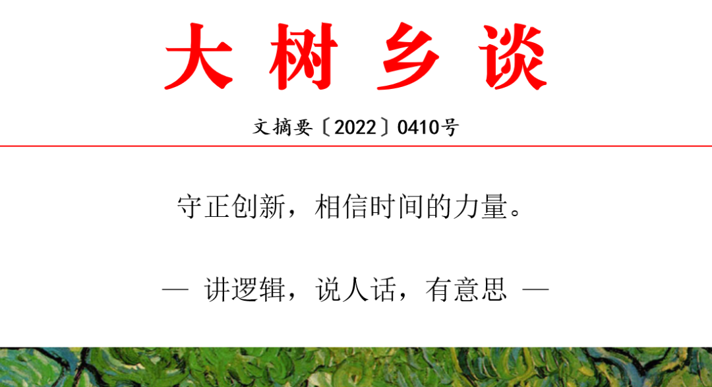

经验分享：负责任、不作恶

最近有读者朋友留言，说受小镇的启发，开始在本职工作之余开展内容分享，已经取得了不错的成果，分享的过程很有收获，问小镇有没有什么建议。
今天是周末，就简单分享下。
在内容分享领域，小镇应该算是入门了，感谢大家的信任与支持。虽然年初有一些波折，原来的号废弃了，到现在关注人数也不到以前的两成，所以阅读数看上去不怎么样，但是按比例来说比以前更好了，小镇也有信心只要长期坚持，一定会越来越好。
何况利大于弊，少了很多麻烦，更方便践行初心了。有几个体会：
第一：要有自己的主业，持续精进，言之有物，表达真实想法。
在各个平台，都有一批职业创作者，公众号也不例外。但小镇一直认为，要做一个有价值的创作者，关键要有料，现实中主业是必须的。只有在现实中有一份工作，持续了解一个行业、领域的事情，以真实的世界和职场不断磨炼自己，创作出来的东西才有生命力。
假如没有足够的积累，那就只能伪冒人设，说一些含含糊糊、似是而非的话，又或者编造一些奇谈怪论。这当然也赚钱，而且特别赚钱，毕竟这样的内容吸引来的读者，特别受某些广告的青睐，这跟诈骗喜欢用很不标准的普通话是类似的。
但是互联网不是法外之地，中国是有刑法的。何况网络世界的整顿一直在进行，假如有个万一，又如何生存？
小镇也不想去砸人家的饭碗，各人有各人的活法。
为什么要有一个主业，也跟小镇此前说的打造第二职业能力有关。我们现在寿命越来越长，一辈子就算公务员也需要做至少两份职业的打算，这里的职业可不是换个部门、换个公司那么简单，更像是跨行业、跨体系。
盲目跨界、跟主业没什么关联，风险非常大、也会消耗过多的精力和时间，反而会严重打击开拓第二路线的信心。
最好的方式是以现实主业的核心能力为主干，在这个核心能力基础上去开拓第二职业能力，可以暂时不开拓第二职业，但能力要先行。
就拿小镇来说。小镇的主业本来就是研究政策和行业发展，需要的就是多看多想多学习，从错综复杂的信息里总结出相对正确的内核，在这个过程中本来就对国家体制机制、政策法规、行业发展等有了解。
现在每天不过是把平时思考的一部分内容分享出来，再结合考虑阅读性和读者偏好，分享的过程也激励了小镇积极学习。说起来惭愧，以前小镇手头明明有特别多的资料，但就是懒、不想看，一些国家的政策也是用到了才现翻。
现在不同了，每天日更的事压着，又不想流量化、背离初心，那就必须主动学习，还得总结成一篇经得起几万人阅读的文章，而与大家的交流也开拓了小镇的认知圈。
这就是一个非常好的循环。主业与第二职业核心能力都是认知与信息整理，第二职业对主业产生了促进，形象地说就是一鱼二吃。
所以小镇才能比较轻松，即使只有小镇一个人，需要包揽素材搜集、文章创作、校正、排版等等事情，但每天全加起来也就2小时以内，再加上交流最多三小时，而这些时间至少一半也可以认为是在从事主业工作，这么一算只不过每天额外付出一个多小时而已。
当然，小镇的例子仅供参考。但内核是一样的：钥匙不在锁上，在其他行业没有一定的积累，对自己的专业没有持续的精进，做内容分享一定不长久。
第二：尊重读者，适度迎合，不玩独角戏。
既然来到了互联网平台，做的就是自媒体的事情，那就要入乡随俗，就必须尊重支持自己的读者，体现在哪呢？
一是把话说清楚，不故弄玄虚让人猜，也不说官话套话。看得懂应该是一篇文章最低的要求，在什么地方就要用这个地方的语言体系，含含糊糊、各种暗示，搞得好像说清楚了就要被迫害似的，其实本质就是一种流量玩法，好像什么都说了、又好像什么都没说，这挺没意思的。
二是要有责任心，不坑人，对得起良心。谁都不是万能的，作为内容的分享者，每天影响的是数万甚至更多人，不作恶应该是内容分享者的底线，更不能把读者的信任当成收割换钱的工具，还是要有正确的价值观。
过去一年，小镇很受鼓舞，比如有的读者是老师，把小镇的文章分享给他的学生们，还有的建家人群每天分享小镇的文章；也有读者因为小镇的一篇文章的启发获得了很好的工作机会，也有人在与小镇交流后调整了自己的职业选择。
至少到目前，还没有读者来骂小镇胡说带错路的。这就是小镇坚持的动力。
第三：长期坚持，打造属于自己的个人品牌
小镇在《人生前35年的个人发展方法论》中提到，30到35岁这个阶段，就要在过去能力和个人形象塑造基础上，着手打造个人品牌，打造个人品牌就是打造个人认知体系，一定要反复摸索、找到适合自己的持续成长模式。
不同的人路子不同，归结到一点都要相信时间的价值，长期坚持下去，大胆尝试、快进快出，一旦觉得这条路感觉可以，那就要谋定则动，真正投身进来，不能三天打鱼两天晒网。
就怕多谋而不动，总想着要把一件事琢磨明白再行动，但是很多事是必须干起来之后才有足够的认知去处理，越是难事，越要行动。就像健身一样，与其搞那么多理论学习，不如从每天散步半小时开始，慢慢的自然就有更好的方法，可以提高效率。
光想不做，是不可能成功的。
还是拿小镇举例，说至少分享20年，是承诺，但更是自我加压逼自己一把。20年感觉挺难的，但再难的事分散到每一天，也不过就是坚持完成每天的分享，无论什么情况、无论疲劳与否、无论时间多紧张，只要还能动那就要完成，不能给自己借口。
有这股子劲在，没多少事不能做到。
最后还有件事：今天次条有个投票，希望由大家一起选出未来的账号新头像，还请大家关注下。
其他文章推荐
■ 2022年中国房地产政策、房价及个人选择
如果喜欢，还请点赞、“在看”和关注吧 欢迎分享，让更多人发现“大树乡谈”